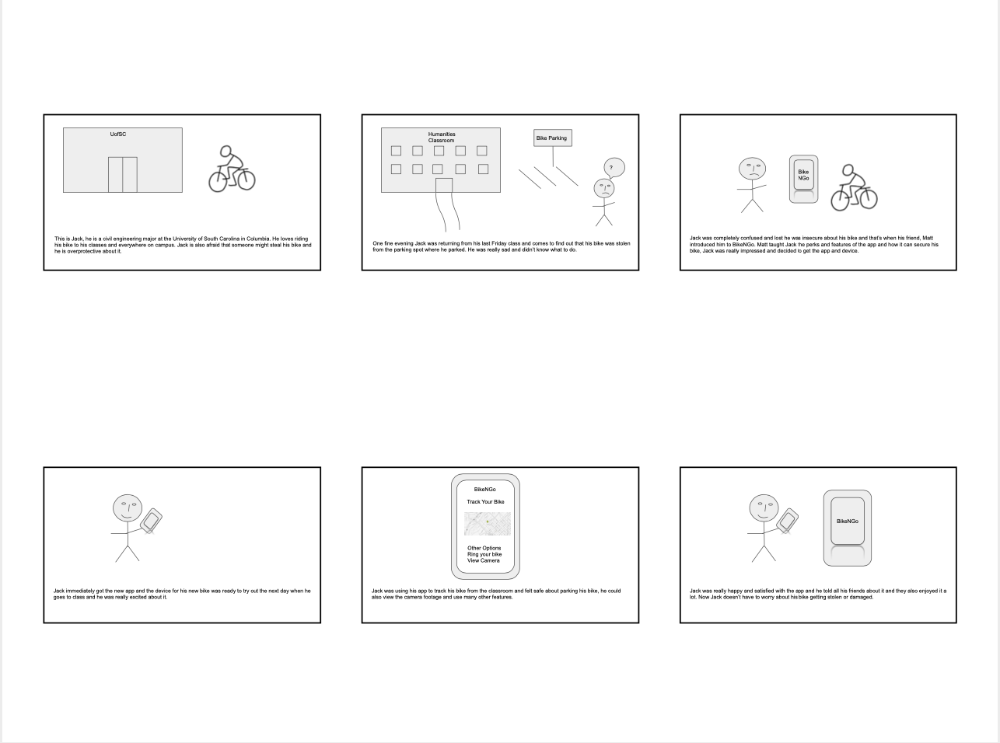
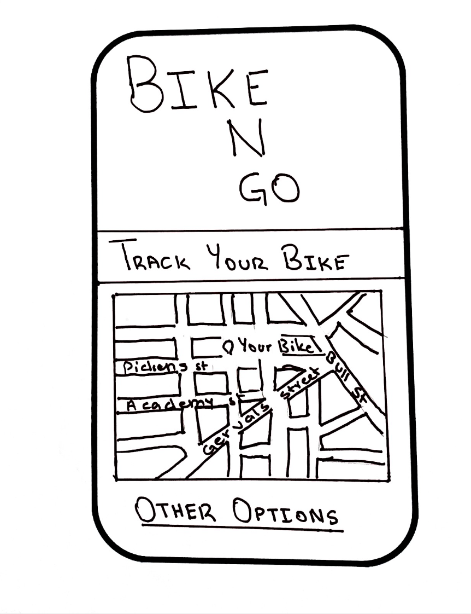
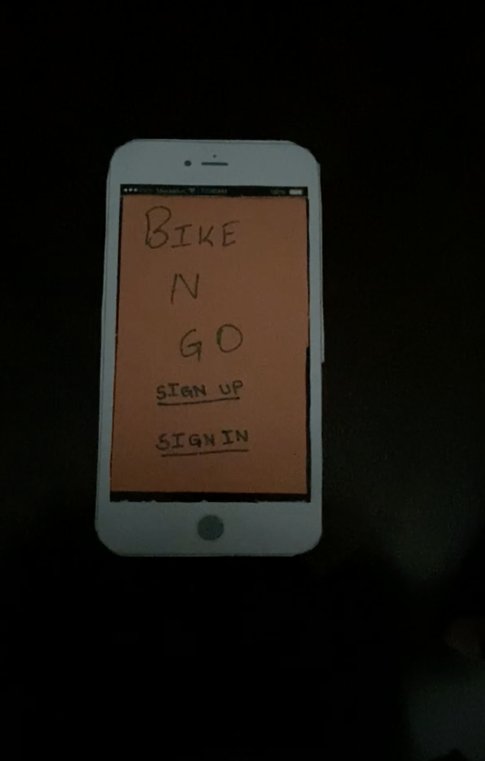
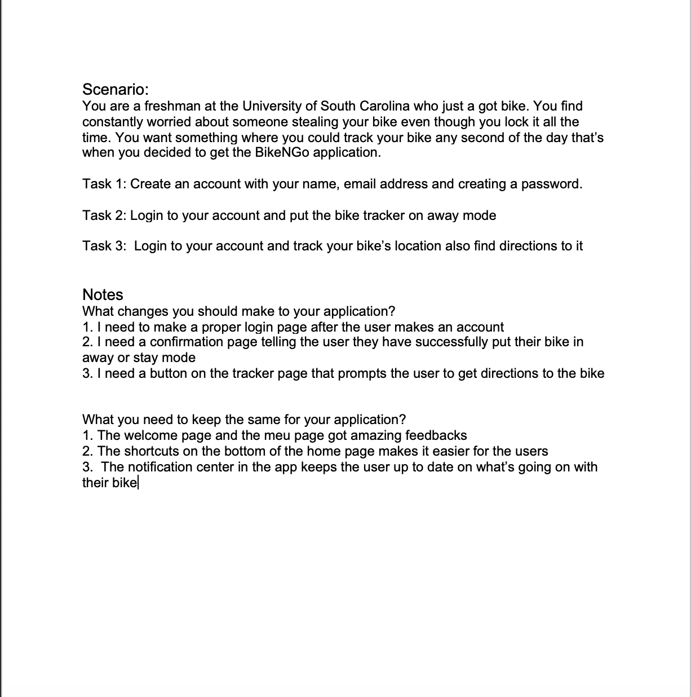
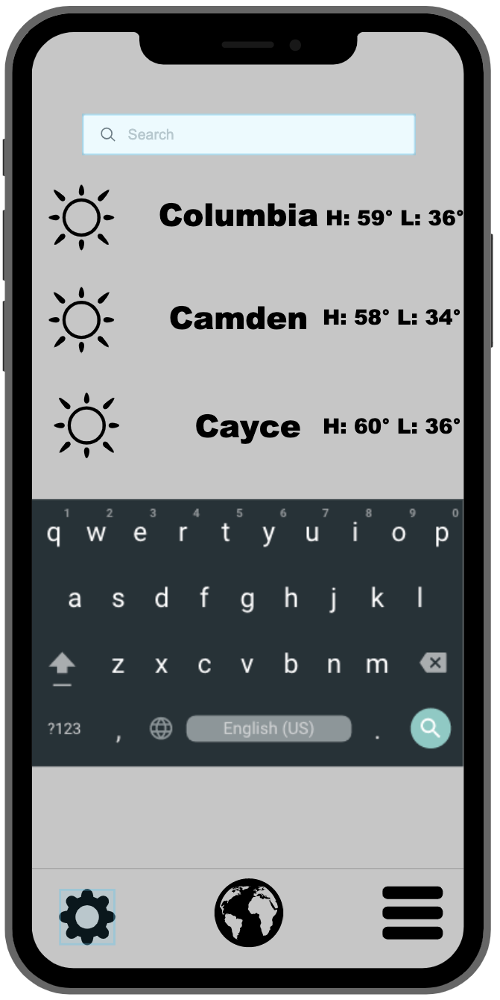
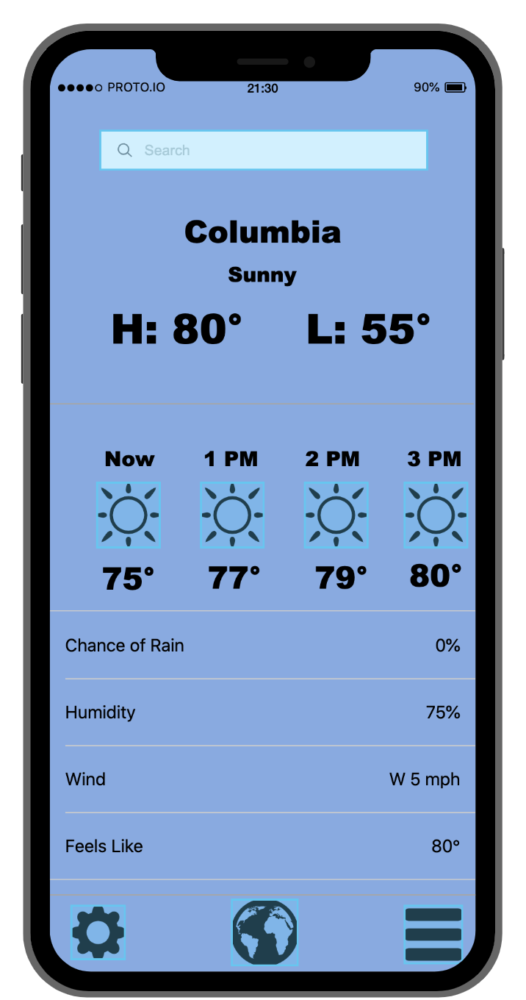

Problem Statement: BikeNGO

College students are frustrated that their bikes keep getting stolen and forget wherethey parked it on campus. Our solution provides students with a way to track their locked bike and be informed if it moves.
Affinity Diagram: BikeNGO

My group and I worked together to brainstorm ideas about the app and the device also some other needs and wants the users will be expecting.
Persona: 3 Personas For BikeNGo

A persona of a typical BikeNGo app user.
Storyboard: Storyboard For BikeNGo
A comic strip illustrating the need of the BikeNGo app.
Sketches: BikeNGo
Sketches of potential app solutions for the BikeNGo app.
Paper Prototype: BikeNGo
A functional prototype on paper which we can use to ideate.
Usability Testing: BikeNGo
A scenario and tasks and the outcome of usability tests.
Low-fi Prototype: Hourly Weather Update
A low fidelity prototype made on proto.io which the users can interact with.
High-fi Prototype: Hourly Weather Update
A high fidelity prototype made on proto.io which the users can interact with.